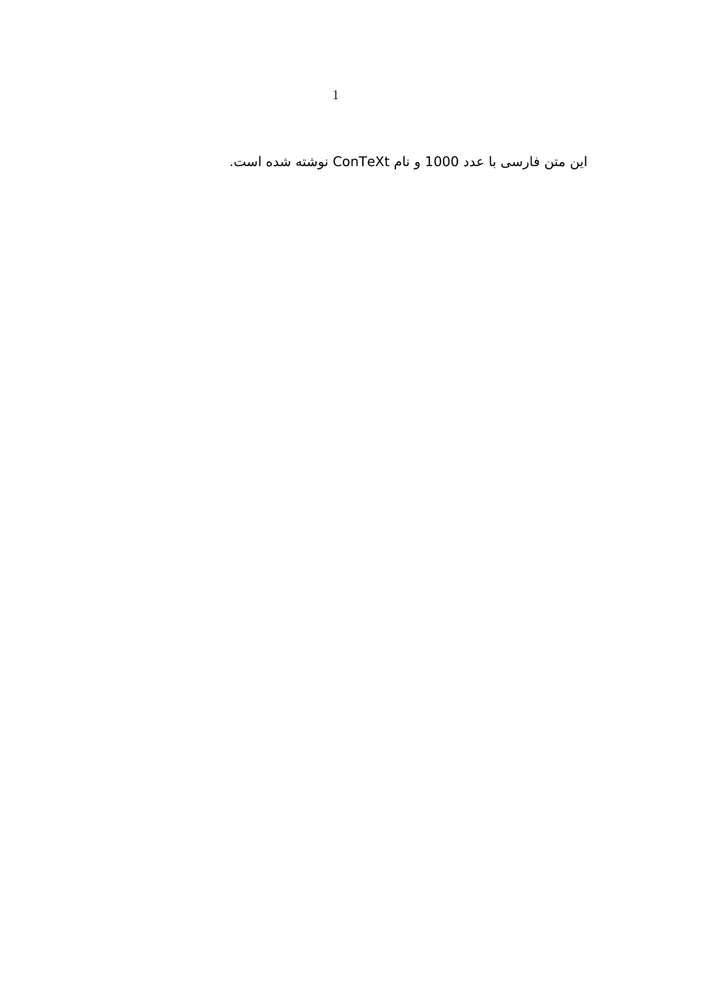
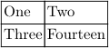
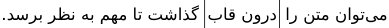

🚧 This page is currently being revised and reconstructed.
Its structure, examples, and explanations are being updated for current ConTeXt and LuaMetaTeX. Some recipes retained from the former page were originally documented for MkIV or historical beta versions and are being retested with current LMTX.
Please feel free to edit, correct, test, or improve this page while the revision is in progress.
Languages in ConTeXt · Input and compilation · Languages · Mixed languages · Right-to-left and BiDi
Contents
-
1
Right-to-left and bidirectional text
- 1.1 1. Set right-to-left direction
- 1.2 2. Enable bidirectional processing
- 1.3 3. Insert text in the opposite direction
- 1.4 4. Language, shaping, font, and direction
- 1.5 5. Numbers in RTL documents
- 1.6 6. Structural elements in RTL documents
- 1.7 7. Framed RTL text
- 1.8 8. Dates and calendars
- 1.9 9. Further example: Persian poetry
- 1.10 10. Troubleshooting
- 1.11 11. A practical testing workflow
- 1.12 12. What belongs on another page?
- 1.13 13. Further reading
- 1.14 14. Related pages
Some writing systems are normally typeset from right to left. Arabic, Hebrew, Persian, and Urdu are familiar examples.
A right-to-left document may also contain material that follows a left-to-right direction, such as:
- numbers;
- Latin names;
- quotations;
- mathematical expressions;
- URLs;
- bibliographical references;
- abbreviations and technical terms.
This page is a specialized how-to guide for right-to-left (RTL) and bidirectional (BiDi) typesetting in ConTeXt.
For the general distinction between language, script, font, shaping, and writing direction, see Languages.
For documents that simply combine several languages or scripts, see Mixed languages.
For language- and script-specific information about Arabic and Hebrew, see Arabic and Hebrew.
RTL and BiDi are related, but they are not the same thing.
RTL
|
+-- establishes a right-to-left writing direction
BiDi
|
+-- resolves the interaction between
right-to-left and left-to-right material
A paragraph may therefore be primarily RTL while still requiring BiDi processing for numbers, Latin text, URLs, or other embedded material.
1. Set right-to-left direction
Use \setupalign with r2l to establish a
right-to-left direction:
-
\definedfont[dejavusans*arabic] \setupalign[r2l] \starttext این نمونه ساده از یک متن فارسی است. \stoptext
The direction of the text is a separate question from the language itself and from the font used to display the script.
Conceptually:
language ≠ script ≠ font ≠ writing direction
For a general explanation of these layers, see Languages: Language, script, and font are different.
A suitable font does not make a paragraph RTL.
A font may contain Arabic or Hebrew glyphs and shape them correctly while the paragraph still has the wrong writing direction.
Font coverage and writing direction solve different problems.
2. Enable bidirectional processing
A right-to-left paragraph often contains elements that follow another direction.
Numbers provide a simple example. Persian or Arabic prose is normally RTL, while numbers are normally treated as LTR elements.
The former version of this page used \setupdirections together with \setupalign:
-
\definedfont[dejavusans*arabic] \setupdirections [bidi=global, method=one] \setupalign[r2l] \starttext این متن فارسی با عدد 1000 و نام ConTeXt نوشته شده است. \stoptext
-

This example illustrates the division of labour:
\setupalign[r2l]
|
+-- principal writing direction
\setupdirections[...]
|
+-- interaction between directional runs
LMTX verification
Older versions of this page used several explicit BiDi methods, including
method=one and method=unicode.
These examples are being retested with current LMTX before one method is recommended as the general default.
3. Insert text in the opposite direction
A mainly RTL document often needs a short LTR fragment or an entire LTR paragraph.
The reverse situation also occurs: an LTR document may contain RTL material.
Direction changes should normally be limited to the material that requires them.
3.1 Define a local LTR environment
The former page used the following convenient definition:
\definestartstop [LTR] [before={\begingroup\lefttoright}, after=\endgroup]
It can then be used as a start/stop environment:
\startLTR This is a left-to-right paragraph inside a mainly right-to-left document. \stopLTR
Keeping the change inside a group prevents it from affecting the following text.
3.2 Short fragments and whole paragraphs
It is useful to distinguish:
short embedded fragment
|
+-- local direction change
whole paragraph
|
+-- grouped paragraph direction
whole document
|
+-- document-level direction setup
Do not change the direction of the whole document merely to typeset one embedded expression.
4. Language, shaping, font, and direction
Right-to-left typesetting involves several independent layers.
For Arabic-script languages, for example:
LANGUAGE | +-- Arabic +-- Persian +-- Urdu +-- ... SCRIPT | +-- Arabic script FONT | +-- glyph coverage SHAPING | +-- contextual forms +-- ligatures +-- mark positioning DIRECTION | +-- RTL BIDI | +-- interaction with LTR material
Changing only one of these layers cannot solve problems belonging to another.
For font discovery and fallback configuration, see:
For language-specific information, see Arabic and Hebrew.
5. Numbers in RTL documents
Arabic, Persian, and Urdu documents may use digit forms different from those normally used in Latin-script documents.
The former page distinguishes decimal conversion methods such as:
persiandecimals arabicdecimals
from conversions named:
persiannumerals arabicnumerals
The exact conversion required depends on the document element being configured.
5.1 Page numbers
For example, the former page used:
\setuppagenumber [numberconversion=persiandecimals]
The important principle is that digit conversion and writing direction are separate:
page direction
≠
number conversion
5.2 Numbers inside mathematics
Mathematical material introduces an additional difficulty because digit selection belongs to the math font setup.
The former page used font fallbacks to substitute Persian or Arabic digit forms inside mathematics.
That mechanism is useful but more specialized than ordinary RTL typesetting, and should be tested with the actual math font used by the document.
Treat mathematics as a separate layer.
Correct RTL prose does not automatically imply that numbers, operators, and digit forms inside mathematics will follow the desired convention.
Test prose and mathematics separately.
6. Structural elements in RTL documents
Once basic RTL and BiDi behaviour works, document structures can be tested one by one.
Typical structures requiring attention include:
- footnotes;
- headings;
- lists;
- enumerations;
- columns;
- tables;
- framed material.
Do not add all of these structures before a minimal RTL/BiDi example is known to work.
6.1 Footnotes
Footnotes in a bidirectional document may themselves contain mixed directions.
Two issues are especially relevant:
- the note text may need BiDi processing;
- the footnote rule and note placement may need to follow the paragraph
direction.
The former page used a setup of this form:
\setupfootnotes [rule=paragraph] \startsetups[bidi:footnotes] \setupdirections[bidi=on] \stopsetups \setupnotes [footnote] [setups=bidi:footnotes]
For Persian decimal note numbers it also used:
\setupnotation [footnote] [numberconversion=persiandecimals]
These settings should be understood as additions to the general footnote mechanism.
For the general configuration, placement, and formatting of notes, see Footnotes.
This page discusses only the additional problems introduced by RTL and BiDi.
6.2 Headings and section numbers
Section headings may combine:
- an RTL title;
- a section number;
- table-of-contents entries;
- converted digits.
The former page used:
\setuphead [part,chapter,section] [conversion=LTRpersiandecimals, numberstyle=\righttoleft]
This recipe is retained as material for current LMTX testing.
When debugging a heading, test separately:
title direction
|
section-number conversion
|
number direction
|
table-of-contents entry
6.3 Itemizations
Numbered itemizations can use an appropriate number conversion:
\startitemize[persiandecimals] \item First \item Second \stopitemize
For multi-column itemizations, the order of the columns may also need to be reversed:
\startitemize [columns,two] [direction=reverse] \item First \item Second \item Third \item Fourth \stopitemize
The former page also gives a global setup:
\setupmixedcolumns [itemgroupcolumns] [direction=reverse]
6.4 Enumerations and descriptions
Enumerations introduce another distinction:
direction of surrounding text
≠
alignment of the enumeration heading
≠
location of the heading
The older page used headalign=r2l together with an RTL
surrounding paragraph.
For example:
\defineenumeration [theorem] [headalign=r2l, alternative=text, text=قضیه, numberconversion=persiandecimals, title=yes]
The available enumeration alternatives should be checked with current LMTX before documenting detailed layout recommendations.
6.5 Columns
Columns in an RTL document may need to be ordered from right to left.
The former page used:
\startcolumns [n=2, direction=reverse] ... \stopcolumns
Column order and text direction are distinct:
column progression
≠
paragraph direction
An older warning on this page reported incorrect section numbering inside RTL columns. That behaviour should be retested with current LMTX before the warning is retained.
6.6 Tables
Tables contain several independent directional decisions:
order of columns
≠
alignment inside cells
≠
direction of text inside cells
For the general ConTeXt table mechanisms, see Tables.
For RTL work, Natural Tables are particularly useful because column order can be controlled explicitly.
The former page gives this example:
-
\bTABLE [align=right, direction=reverse] \bTR \bTD One \eTD \bTD Two \eTD \eTR \bTR \bTD Three \eTD \bTD Fourteen \eTD \eTR \eTABLE
-

The direction=reverse setting controls column progression.
Cell alignment remains a separate option.
Tables are a good example of layered direction.
Do not assume that reversing the column order also establishes the desired text direction inside every cell.
Test table structure and cell contents separately.
7. Framed RTL text
Short framed material can occur inside RTL prose.
The older page used:
-
\definedfont[dejavusans*arabic] \righttoleft میتوان متن را \inframed{درون قاب} گذاشت تا مهم به نظر برسد.
-

For multiline framed material, the content alignment may need to be stated explicitly:
\framed [width=5cm, align=r2l] { ... }
The position of the frame itself and the direction of the text inside it are again separate questions.
For general framed-text configuration, see Frames.
8. Dates and calendars
The standard \currentdate and \date commands support several calendar conversions.
The former page included examples for Jalali and Hebrew dates:
\currentdate[jalali:to,dd,/,mm,/,y] \currentdate[hebrew:to,dd,/,mm,/,y]
This is a more specialized topic than basic RTL/BiDi processing.
Digit conversion, translated month names, calendar conversion, and writing direction should therefore be tested separately.
Historical versions of this page also contained Lua workarounds for Persian digit conversion in Jalali dates. Those workarounds should not be promoted to recommended examples unless they are still required by current LMTX.
9. Further example: Persian poetry
The former page also included an example using the
hemistich module for classical Persian poetry:
\usemodule[hemistich] \definedfont[dejavusans*arabic] \setupalign[r2l] \hemistiches {چه خوش گفت فردوسی پاک زاد} {که رحمت بر آن تربت پاک باد} \hemistiches {میازار موری که دانهکش است} {که جان دارد و جان شیرین خوش است}
This is a useful example of combining RTL typesetting with a specialized literary structure.
The poetic structure itself, however, is not part of the BiDi mechanism.
10. Troubleshooting
| Symptom | First thing to investigate |
|---|---|
| Arabic or Hebrew characters appear, but the paragraph runs left to right | writing direction |
| Arabic letters do not join correctly | font and shaping |
| RTL prose is correct, but Latin words or numbers appear in the wrong place | BiDi processing |
| Persian digits are not used in page numbers | number conversion |
| note text has incorrect direction | note-specific BiDi setup |
| note numbers use the wrong digit forms | notation number conversion |
| columns appear in LTR order | column direction |
| table columns are ordered incorrectly | table direction |
| table columns are correct but cell contents are misaligned | cell alignment and text direction |
| a framed paragraph is RTL but the frame is positioned unexpectedly | frame placement versus content alignment |
| mathematics uses unexpected digit forms | math font and fallback |
11. A practical testing workflow
When constructing an RTL or bidirectional document, add mechanisms progressively:
choose a suitable font
|
v
test script shaping
|
v
set RTL direction
|
v
test a simple paragraph
|
v
enable / test BiDi
|
v
add numbers and Latin text
|
v
test local direction changes
|
v
add notes, headings, lists
|
v
add tables or columns
|
v
test the complete document
This makes it easier to identify the layer responsible for an error.
Avoid debugging all layers at once.
When something fails, ask which problem you are actually seeing:
language? script? font? shaping? direction? BiDi? number conversion? structure?
Changing several unrelated settings at the same time usually makes the problem harder to identify.
12. What belongs on another page?
This guide concentrates on writing direction and the interaction of different directions.
Use the related pages for the underlying or language-specific mechanisms.
| Question | Page |
|---|---|
| What is the difference between language, script, font, and direction? | Languages |
| How do I combine several languages in one document? | Mixed languages |
| How do I configure Arabic or Hebrew specifically? | Arabic and Hebrew |
| How do I choose or install fonts? | Fonts and Use the fonts you want |
| How do footnotes work in general? | Footnotes |
| How do ConTeXt tables work? | Tables |
| How do framed environments work? | Frames |
13. Further reading
- Languages ;
- Mixed languages ;
- Arabic and Hebrew ;
- Fonts ;
- Use the fonts you want ;
- Footnotes ;
- Tables ;
- Frames ;
- Bidirectional typesetting — official PRAGMA documentation;
- Dabeer — macros and examples for typesetting Persian documents with ConTeXt.
14. Related pages
- Input and compilation
- Languages
- Mixed languages
- Arabic and Hebrew
- Chinese, Japanese and Korean
- Indic scripts
- Fonts
- Use the fonts you want
- Footnotes
- Tables
- Frames
Languages in ConTeXt · Input and compilation · Languages · Mixed languages · Right-to-left and BiDi